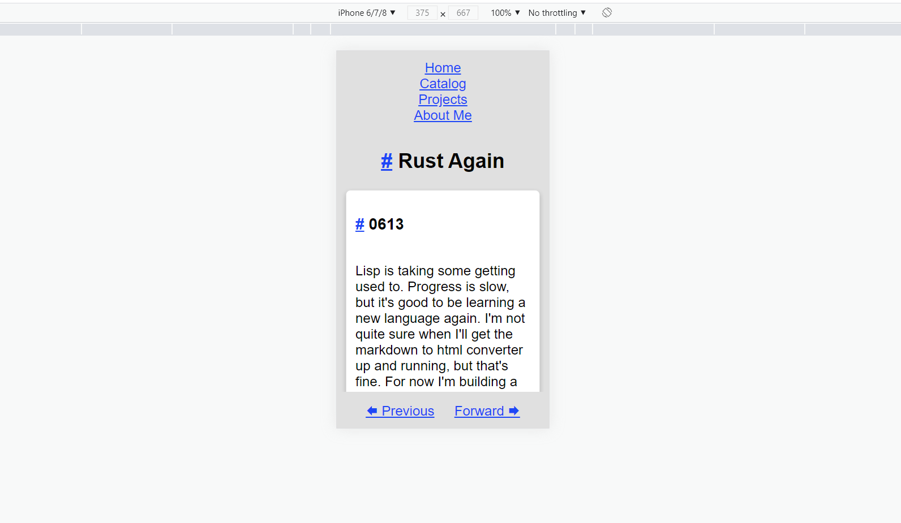
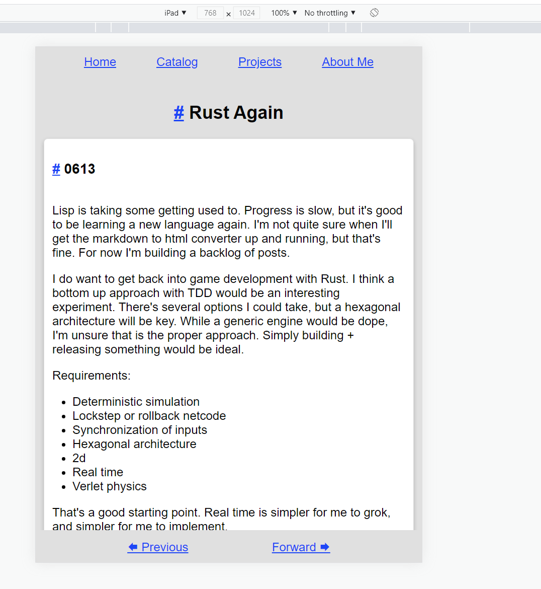

Top nav has been done. Looking back, the navigation should have been handled differently by making the body overflow auto, but it's not worth changing at this point. I just want to move to something else.
I've done some reworking on the ContentIr::Navigation {} data type to build out a top or bottom nav.
// parser/md/parse_contents/content_ir.rs
...
Navigation {
links: Links,
next: Option<Link>,
previous: Option<Link>,
},
...
impl HtmlElement for ContentIr {
fn to_element(&self) -> Element {
...
ContentIr::Navigation {
links,
next,
previous,
} => {
let map = |s: &Option<Link>| match s {
Some(link) => Some(link.to_str().to_string()),
None => None,
};
let bottom_nav = element::bottom_nav(map(previous), map(next));
let top_nav = element::top_nav(links.clone());
element::div(vec![bottom_nav, top_nav])
}
...
}
}
...
I also wired that bit to all new generated pages I've been working on.
Inside the element module I added a new top_nav method and modified the bottom_nav method. I refactored the class module to simplify navigation generation which will be shown shortly.
// html/element.rs
...
pub fn bottom_nav(previous: Option<String>, next: Option<String>) -> Element {
let previous = make_link(previous, "🡄 Previous".into(), "previous_page_link".into());
let next = make_link(next, "Forward 🡆".into(), "next_page_link".into());
Element {
classes: vec![Class::Navigation {
position: Position::Bottom,
}],
id: None,
kind: Kind::Div {
children: vec![previous, next],
},
}
}
...
// private helper method to make links
fn make_link(url: Option<String>, description: String, id: String) -> Element {
let disabled = url.is_none();
let url = url.unwrap_or_default();
match disabled {
true => text(&description),
false => link(Some(id), description, url, true),
}
}
...
pub fn top_nav(links: Links) -> Element {
let children = {
let about_me = make_link(
Some(links.about_me_link),
"About Me".into(),
"aboutMeNav".into(),
);
let catalog = make_link(
Some(links.catalog_link),
"Catalog".into(),
"catalogNav".into(),
);
let index = make_link(Some(links.index_link), "Home".into(), "homeNav".into());
let projects = make_link(
Some(links.projects_link),
"Projects".into(),
"projectsNav".into(),
);
vec![index, catalog, projects, about_me]
};
Element {
classes: vec![Class::Navigation {
position: Position::Top,
}],
id: None,
kind: Kind::Div { children },
}
}
...
The last changes are within the class file. There were quite a few, such as the addition of a media_query method that changes styling based on screen sizes.
First I removed the BottomNav element from the Class data type and added a new Navigation type.
// html/stylesheet/class.rs
#[derive(Debug, Clone, PartialEq)]
pub enum Class {
AspectRatio16x9Container,
AspectRatio16x9Inner,
Card { dark_mode: bool },
Codeblock,
ContentWrapper,
FullImg,
HoverShadow,
List,
Navigation { position: Position },
Outlined { dark_mode: bool },
Padded { position: Position },
Page,
Shadow,
TextAlign { alignment: Alignment },
}
I won't show the boilerplate changes with the Class implementation.
Next I modified the body class method to take into account screen size. Looking back, I should have reorganized the page itself and not used floating divs for the nav components, but that is not a change I want to make right now. It's tech debt.
// html/stylesheet/class.rs
...
pub fn body(theme: &Theme) -> Css {
let nav_padding = "64px";
let mobile_top_nav_padding = "128px";
let rules = vec![
format!("background: {}", theme.fill_secondary_light_mode.to_html()),
format!("color: {}", theme.text_primary_light_mode.to_html()),
"font-family: Arial, Helvetica, sans-serif".into(),
"font-size: 18pt".into(),
"font-weight: 400".into(),
"margin: auto".into(),
"max-width: 100vw".into(),
format!("padding: {} 0 {} 0", nav_padding, nav_padding),
"text-align: center".into(),
];
let selector = "body";
let main_class = format!("{} {{ {} }}", selector, combine_rules(rules));
media_screen_query(
main_class,
false,
selector,
TOP_NAV_COLUMN_PX_LIMIT,
vec![format!(
"padding: {} 0 {} 0",
mobile_top_nav_padding, nav_padding
)],
)
}
...
Next is the media_screen_query method that applies styling based on a maximum screen size. I ran into an issue where the top nav was formatted strangely, cutting off the page for mobile. As mentioned above, change the page layout with an overflow component for the body would be the optimal fix.
// html/stylesheet/class.rs
...
fn media_screen_query(
main_class: String,
is_custom_class: bool,
id: &str,
max_width_pixels: u32,
media_rules: Vec<String>,
) -> Css {
let size_rules = format!("(max-width: {}px)", max_width_pixels);
let prefix = if is_custom_class { "." } else { "" };
let media_class = format!("{}{} {{ {} }}", prefix, id, combine_rules(media_rules));
let media_class = format!("@media screen and {} {{ {} }}", size_rules, media_class);
format!("{}\n{}", main_class, media_class).into()
}
...
And last but not least is the new nav class. This will generate either the top or bottom nav. It also changes the flex-direction from row to column when the screen size shrinks.
// html/stylesheet/class.rs
...
pub fn nav(class: &Class, position: &Position, theme: &Theme) -> Css {
let rules = vec![
"align-content: center".into(),
format!("background: {}", theme.fill_secondary_light_mode.to_html()),
match position {
Position::Top => "top: 0",
Position::Bottom | _ => "bottom: 0",
}
.into(),
"display: flex".into(),
"flex-direction: row".into(),
"justify-content: space-evenly".into(),
"left: 0".into(),
"padding: 16px".into(),
"position: fixed".into(),
"width: 100%".into(),
];
let main_class = format!(
".{} {{ {} }}",
class.selector().to_str(),
combine_rules(rules)
);
if *position == Position::Top {
media_screen_query(
main_class,
true,
class.selector().to_str(),
TOP_NAV_COLUMN_PX_LIMIT,
vec!["flex-direction: column".into()],
)
} else {
main_class.into()
}
}
...
Here's the example with the mobile/phone styling applied:

And here's the example with the normal styling applied:

I don't think a side nav is necessary at this point so I'll cut scope.
Remaining items:
One of the next projects I need to do is deployment. That may be as simple as writing something that generates a manifest, notes the changed files, and only updates those which were modified. Perhaps I can get away with a full upload to start with. Regardless, this is nearing completion which I am extremely happy about.